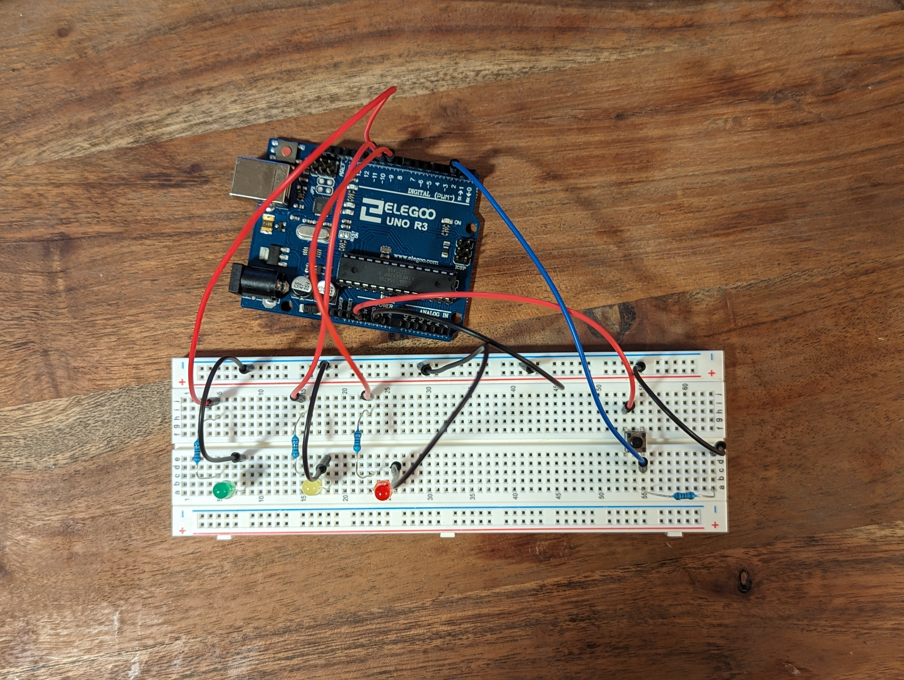

Sam's Assignment 1!

For assignment 2, I made a fading lights! The LEDs fade dark to bright, one-by-one. If you click the button, they fade in the opposite direction.
Code
//declare pin values for the LEDs and the button
int green = 11;
int yellow = 10;
int red = 9;
int button = 2;
int change = 1; // direction of change for loop index, either 1 or -1
int start = 0; // pmv value for the start of loop, either 0 or 255
int pin_start = 11; // pin vaule for start of loop, either 11 or 9
void setup() {
// set pins as either inputs and outputs
pinMode(button, INPUT);
pinMode(green, OUTPUT);
pinMode(yellow, OUTPUT);
pinMode(red, OUTPUT);
}
void loop() {
int i = pin_start; // sets index i to pin starting value
for (i; i > 8 && i < 12; i=i-change){ // this loop through the LED pins
// turns off all LEDs at each LED change
digitalWrite(green, LOW); // green LED off
digitalWrite(yellow, LOW); // yellow LED off
digitalWrite(red, LOW); // red LED off
int j = start; // resets j to start value, 0 or 255, depending on the direction
for (j; j < 256 && j > -1 ; j=j+change){ // loops through all pmv values of the indexed LED
analogWrite(i, j); // the indexed led to the indexed pmv value
delay(5); // waits breifly to set the pace of the fade
if (digitalRead(button) == HIGH){ // checks to see if button has been pressed
change=-change; // changes the direction of increment for both loops
if (start == 0){ // opens if currently fading to bright
start = 255; // fade loop now starts LEDs bright
pin_start = 9; // pin loop now starts on red
}
else { // opens if currently fading to dark
start = 0; // fade loop now starts LEDs dark
pin_start = 11; // pin loop now starts on green
}
while (digitalRead(button) == HIGH){ // closes when button is released so button can be clicked instead of held
delay(10); // waits briefly
}
}
}
}
}
Schematic
Breadboard

Questions
1: Draw a chart where the X axis is time and the Y axis is voltage. Draw 3 lines representing the voltage across an LED with analogWrite(led, 64), analogWrite(led, 128), and analogWrite(led,255).
2: Given your schematic, circuit, and firmware, assuming the only thing that draws current is your LEDs, how long would your circuit run if powered by a 1200 mAh battery?
Since only one LED runs at a time the current would be 3.2V/220ohms= 14.5mA. Because of the consistent fade an LED would only be on half the time, avergaing to 7.25 mA.
1200mAh/7.25mA = 165.5 hours.